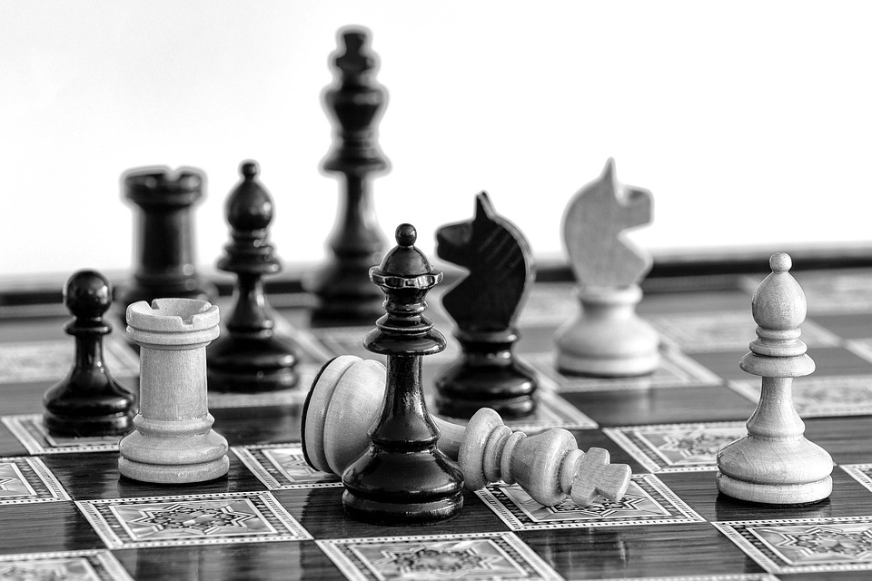

3 Chess Tactics To Win Your Next Game
October 02, 2023 by Kerron Murray
It's 8:05 am, and you should have left for work ten minutes ago. However, today, you're fully immersed in a thrilling chess match, orchestrating an all-out attack on your opponent's king. Move by move, you inch closer to victory, sacrificing pieces and calculating possibilities. As the clock reaches its final seconds, you make your decisive move, leaving your opponent's king with no escape.
Does this sound like you? Or do you overthink winning positions, make a one-move blunder and then lose?
Let's fix that, shall we?
Here are 3 tips to improve your game from beginning to end:
1. The Fork: Double Trouble for Your Opponent
The fork is a powerful chess tactic that involves attacking two or more of your opponent's pieces simultaneously with one of your own. It often leads to material gain by forcing your opponent to choose which pieces to save and which to sacrifice.To execute a successful fork, keep an eye out for instances where your knight, bishop, or queen can threaten multiple enemy pieces in a single move. Knights, with their unique L-shaped movement, are particularly adept at forking. With practice, you can become skilled at spotting fork opportunities and putting your opponents in tough positions.
2. The Pin: Holding Your Opponent in Place
A pin is a potent chess tactic that restricts your opponent's movement and exposes vulnerabilities in their position. This maneuver typically involves one of your pieces, like a bishop, rook, or queen, attacking an opponent's piece in a way that, if moved, would expose a more valuable piece behind it. For instance, pinning your opponent's Queen to their King with your bishop or rook can be a powerful tactic, as the Queen cannot move as that would expose the king and potentially lead to capturing the pinned piece. Identifying and using pin opportunities strategically can apply considerable pressure to your opponent.
3. The Skewer: Forcing Concessions
This tactic blends aspects of both the fork and the pin strategies. In a skewer, one of your more valuable pieces attacks a less valuable one, enticing your opponent to move the less valuable piece. However, this maneuver exposes a more valuable piece positioned behind it, which you can capture on your subsequent move. A classic example of a skewer scenario is when your queen targets your opponent's rook. As the rook moves to safety, your queen seizes the opportunity to capture a less valuable piece, such as a bishop or knight, positioned behind it. Skewers are a potent method for gaining a material advantage and placing your opponent in a defensive position.